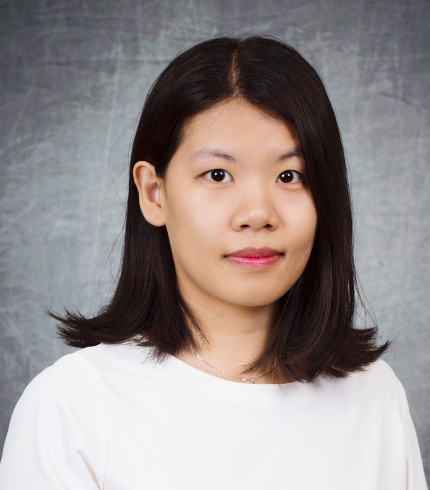

ICDM 2022 Tutorial: Fairness in Graph Mining: Metrics, Algorithms, and Applications
Time: 1:00 PM - 6:00 PM, Nov 29, 2022 (Eastern Time, USA)
Location: Key West B Room, Hilton Orlando (6001 Destination Pkwy, Orlando), Florida, USA
Description
Graph data is ubiquitous in diverse real-world applications. To gain a deeper understanding of these graphs, graph mining algorithms have been playing a significant role over the years. Nevertheless, most graph mining algorithms lack fairness consideration. As a consequence, they could render discriminatory results against certain demographic subgroups or individuals. Such potential discrimination leads to an increasing societal concern about alleviating the bias exhibited in graph mining algorithms. In this tutorial, we provide a comprehensive overview of the recent research progress in measuring and mitigating the bias exhibited in graph mining algorithms. Specifically, we first introduce several widely-used fairness notions and the corresponding metrics. Then, we present an organized summary of existing techniques to debias graph mining algorithms. Furthermore, we demonstrate how different real-world applications benefit from these graph mining algorithms after debiasing. Finally, we provide insights on current research challenges and open questions to encourage further advances.
Keywords: Graph Mining Algorithms, Debiasing, Algorithmic Fairness
Part 1: Introduction
- Background and Motivation.
- An overview of graph mining tasks that have been studied on algorithmic bias mitigation.
- An overview of the applications which benefit from debiased graph mining algorithms.
Part 2: Fairness Notions and Metrics in Graph Mining
- Why is it necessary to define fairness in different ways?
- Group Fairness: graph mining algorithms should not render discriminatory predictions or decisions against individuals from any specific sensitive subgroup.
- Individual Fairness: graph mining algorithms should render similar predictions for similar individuals.
- Counterfactual Fairness: an individual should receive similar predictions when his/her features are perturbed in a counterfactual manner.
- Degree-Related Fairness: nodes with different degree values in the graph should receive similar quality of predictions.
- Application-Specific Fairness: fairness notions defined in specific real-world applications.
Part 3: Techniques to Debias Graph Mining Algorithms
- Optimization with regularization.
- Optimization with constraint.
- Adversarial learning.
- Edge re-wiring.
- Re-balancing.
- Orthogonal projection.
Part 4: Real-World Application Scenarios
- Recommender systems.
- Applications based on knowledge graphs.
- Other real-world applications, including candidate-job matching, criminal justice, transportation optimization, credit default prediction, etc.
Part 5: Summary, Challenges, and Future Directions
- Summary of presented fairness notions, metrics and debiasing techniques in graph mining.
- Summary on current challenges and future directions.
- Discussion with audience on which fairness notion, metric should be applied to their own application scenarios.
Presenters

Yushun Dong is a third-year Ph.D. student in the Department of Electrical and Computer Engineering at the University of Virginia. His research interest broadly lies in the graph mining realm, with a particular interest in algorithmic fairness problems in graph mining. He has been studying how to mitigate and interpret the exhibited bias in graph mining algorithms for more than two years, and his related papers have been accepted in top-tier conferences, including SIGKDD and WWW. He is also the first author of a recent survey paper on algorithmic fairness in graph mining.

Jing Ma is a Ph.D. candidate in the Department of Computer Science at the University of Virginia. Her research interests include causal inference, machine learning, data mining, and especially for bridging the gap between causality and machine learning. Her works have been published in top conferences and journals such as KDD, IJCAI, WWW, AAAI, TKDE, SIGIR, and IPSN.

Chen Chen is a Research Assistant Professor at the University of Virginia. She got her Ph.D. degree from Arizona State University. Her research focuses on the connectivity of complex networks and has been applied to address pressing challenges in various high-impact domains, including social media, bioinformatics, recommendation, and critical infrastructure systems. Her research has appeared in top-tier conferences (including KDD, ICDM, SIGIR, etc.), and prestigious journals (including IEEE TKDE, ACM TKDD, and SIAM SAM). Chen has received several awards, including Bests of SDM'15, Bests of KDD'16, Rising Star in EECS'19, Outstanding Reviewer of WSDM'21.

Jundong Li is an Assistant Professor in the Department of Electrical and Computer Engineering, with a joint appointment in the Department of Computer Science, and the School of Data Science. He received Ph.D. degree in Computer Science at Arizona State University in 2019. His research interests are in data mining, machine learning, and causal inference. He has published over 100 articles in high-impact venues (e.g., KDD, WWW, AAAI, IJCAI, and WSDM.). He has won prestigious awards including NSF CAREER Award, JP Morgan Chase Faculty Research Award, Cisco Faculty Research Award, and being selected for the AAAI 2021 New Faculty Highlights program.
Powered by Yushun Dong @UVa, 2022